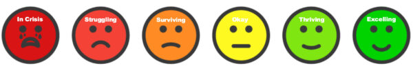

It can take some people longer than others to feel safe or back to their old self following a significant event.
There might be signs you need some extra support to help you feel better again.
They include:

For people who need support with depression, anxiety or suicidal thoughts:
Reaching out for help is a positive step. You do not need to wait until things feel too hard. Talking with someone early can help you feel supported, safe and understood.
If you are in immediate danger or need urgent help, call emergency services.